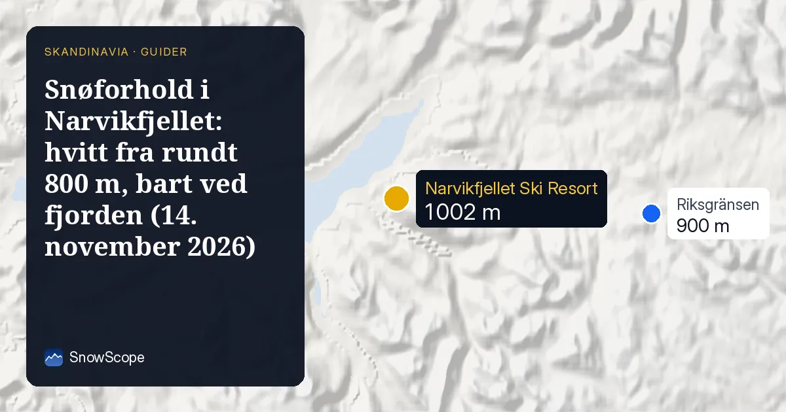

Snøforhold i Narvikfjellet: hvitt fra rundt 800 m, bart ved fjorden (14. november 2026)
Narvikfjellet reiser seg rett opp fra fjorden, fra rundt 125 m til 1 002 m, så du kan stå i regn i bunnen og i vinter på toppen. Norges nasjonale snøkart anslår rundt 50 cm på bakken på 1 110 m, rundt 35 cm på 844 m, bare rundt 3 cm på 492 m og ingenting i fjæra. Dette er anslag. Nærmeste stasjon som måler snø, Straumsnes på 200 m og 8 km unna ved fjorden, hadde 2 cm morgenen 13. november; Katterjåkk, på svensk side av grensen på 514 m og 29 km unna, hadde 9 cm.
Se snøprognosen for Narvikfjellet Ski Resort direkte i SnowScope-appenSnødybde, puddervarsler og 3D-kartet, gratis.

To vintrer i én bakke
Spranget mellom 492 m og 844 m på det nasjonale kartet er det viktigste for skiløperne: de øverste heisene står i ordentlig snø, den nederste halvdelen gjør ikke det. Katterjåkk, i omtrent samme høyde som midt i Narvikfjellet, men inne i landet, hadde 10 cm 10. november og 9 cm nå, et jevnt tynt lag.
Vårt eget anslag for de siste sju dagene er rundt 20 cm nysnø midt i fjellet og på toppen, og rundt 4 cm i bunnen. Ikke alt ligger fortsatt der i bunnen.

Uka som kommer
Vi venter rundt 9 cm på toppen og på 563 m de neste sju dagene, og rundt 6 cm i bunnen. De andre prognosene vi sammenligner med, spenner fra 7 til 25 cm på toppen. Denne gangen når kulda helt ned til havet: i disse prognosene synker snøgrensen under fjæra, og bare rundt en sjettedel av nedbøren i bunnen kommer som regn.
Bunnen av bakken har dermed endelig en sjanse til å bli hvit, selv om mengdene er beskjedne.
Normalt ved polarsirkelen
Våre 46 tidligere vintrer gir vanlig snødybde 14. november på 86 cm på toppen, 60 cm midt i fjellet og 36 cm i bunnen. Innen 15. desember er det 129, 100 og 69 cm. Dagens topp, rundt 50 cm på det nasjonale kartet, ligger under det vanlige tallet for toppen.
Sesongen er lang her. Toppen får vanligvis den første snøen som blir liggende rundt 18. september og holder seg hvit i omtrent 297 dager. I motsetning til det meste av Sør-Norge viser den lange tidsserien ikke noe tap i Narvik: største snødybde på toppen i en middels vinter var 288 cm de første 15 vintrene og 286 cm de siste 15.
Er Narvikfjellet åpent?
Nei, og ikke på en stund. Den offisielle sesongen er 3. januar til 2. mai 2027, med en merknad om at åpningen avhenger av snøproduksjon og nok kulde i desember.
Tips til skiløpere
- I midten av november har Narvik bare noen få timer med brukbart dagslys. Legg turen i bakken rundt midt på dagen.
- Det bratte terrenget over den øverste heisen er alvorlig skredterreng: les det regionale snøskredvarselet først.
- Vind fra fjorden kan stenge de øverste heisene selv når snøen er god; sjekk heisstatusen om morgenen.
Flere kart (eksterne nettsteder)
Referanser og kilder
- seNorge, Norges nasjonale snøkart (NVE og Meteorologisk institutt), åpne data under NLOD-lisensen www.senorge.no/
- SMHI, åpne data: daglig snødybde på svenske værstasjoner www.smhi.se/data/meteorologi/ladda-ner-meteorologiska-observationer
- Narvikfjellet, offisiell side: åpningsdatoer og heisstatus, lest 2026-11-13 www.norwaysbest.com/no/narvik/skisenter/apningstider-og-loypekart
- Varsom, snøskredvarsler for Norge www.varsom.no/
- Meteorologisk institutt, stasjonsobservasjoner (CC BY 4.0), daglige rapporter slik de publiseres av Ogimet www.ogimet.com/
Om tallene
Målt snø: morgenmålinger 13. november 2026 ved de offisielle værstasjonene i Sverige (SMHI åpne data), Finland (FMI åpne data, CC BY 4.0) og Norge (MET Norways stasjonsrapporter, CC BY 4.0, publisert av Ogimet). Norges nasjonale snøkart seNorge (NVE og MET Norway, NLOD) gir anslagene på et rutenett på 1 km for bakkene. Våre tall: SnowScopes prognose for de neste sju dagene i tre høyder i skisenteret, sammenlignet med uavhengige prognoser (ECMWF, ICON, GFS, GEM) for 14. til 20. november; snøhistorikk for 46 tidligere vintre (1980-81 til 2025-26), en modell av fortiden korrigert for høyde. Åpningsdatoer: skisentrenes egne sider, lest 13. november 2026. Løypelengde og antall heiser: kartlegging i OpenSkiMap.
Offisielle snøskredvarsler: Varsom (NVE)
Siter denne rapporten
For forskning, undervisning eller presse: tallene og diagrammene kan brukes fritt under CC BY 4.0 med denne kildehenvisningen.
SnowScope (2026), Snøforhold i Narvikfjellet: hvitt fra rundt 800 m, bart ved fjorden (14. november 2026), https://snowscope.app/blog/nb/2026/11/narvikfjellet-snow-conditions-14-november-2026.html, hentet 2026-11-14
SnowScope (Atlas Labs). (2026, November 14). Snøforhold i Narvikfjellet: hvitt fra rundt 800 m, bart ved fjorden (14. november 2026). SnowScope snow reports. https://snowscope.app/blog/nb/2026/11/narvikfjellet-snow-conditions-14-november-2026.html
BibTeX
@misc{snowscope2026narvikfjelletsnowconditi,
author = {{SnowScope (Atlas Labs)}},
title = {Snøforhold i Narvikfjellet: hvitt fra rundt 800 m, bart ved fjorden (14. november 2026)},
year = {2026},
month = nov,
howpublished = {\url{https://snowscope.app/blog/nb/2026/11/narvikfjellet-snow-conditions-14-november-2026.html}},
note = {Published 2026-11-15 09:34 UTC; accessed 2026-11-14}
}· CC BY 4.0 · Metoder, data og verktøy →
Følg Narvikfjellet Ski Resort
Gratis: en melding når nysnø er på vei, og prognosen hver morgen.